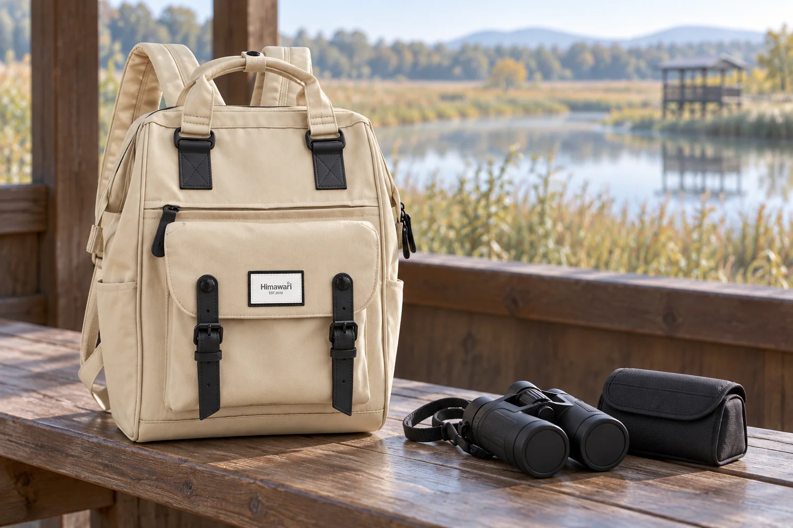

쌍안경을 자주 꺼내는 백팩, 멈춘 자리에서 다시 메기까지

쌍안경을 한 번 꺼내 오래 쓰는 날과 산책 중 여러 번 넣고 빼는 날은 백팩을 다루는 횟수가 다릅니다. 처음에는 잘 들어갔던 케이스도 두 번째에 꺼내려면 겉옷을 옮겨야 할 수 있습니다. 탐조 산책의 가방을 고를 때에는 출발할 때의 수납 모습에 더해, 멈추고 꺼내고 다시 걷는 동작을 이어봅니다.
들고 나갈 쌍안경과 부속품은 기기 안내에 맞는 보관 상태로 준비합니다. 케이스를 사용한다면 본체가 들어가고 정상적으로 닫힌 전체 외형을 봅니다. 덮개나 끈의 위치도 그 구성에 포함됩니다. 백팩에서는 케이스를 잡을 면과 넣는 방향을 비교합니다. 케이스가 손에 잡힐 면을 남긴 상태로 다른 짐을 더해봅니다.
어디에 멈췄을 때 가방을 열 수 있을까
벤치가 있는 관찰 지점과 잠시 서서 머무는 장소에서는 가방을 둘 여건이 다릅니다. 앉을 수 있다면 백팩을 받친 뒤 케이스를 통째로 꺼내기 쉽도록 구성을 정할 수 있습니다. 가방을 둘 곳이 없다면 무리하게 뒤쪽 지퍼를 열며 움직이기보다 정리할 장소를 먼저 찾습니다. 쌍안경을 빨리 꺼내는 위치 하나보다 실제로 백팩을 안정되게 다룰 자리가 중요합니다.
자신이 자주 하는 동작을 집에서 한 번 이어봅니다. 평소 짐을 넣고 메었다가 내려놓은 뒤 케이스를 꺼내봅니다. 이때 물병과 개인 소지품까지 밖으로 옮겨야 한다면 어느 위치가 겹치는지 봅니다. 케이스를 더 위쪽에 둘 수도 있고 주변의 두꺼운 파우치를 옮길 수도 있습니다. 배치를 바꾼 뒤에는 다른 소지품을 찾는 동작도 여전히 가능한지 확인합니다.
백팩을 놓을 때 끈이 입구 위로 넘어오면 케이스를 잡기 전에 끈을 치우게 될 수 있습니다. 가방을 돌려놓는 방향을 바꾸어 같은 동작을 비교해봅니다. 끈을 정리하는 방법은 가방 안내를 따릅니다. 케이스를 붙잡고 있는 손으로 백팩까지 동시에 옮기려 하지 않아도 되는 순서를 찾으면 반복할 때 필요한 행동이 분명해집니다. 접힌 케이스의 크기와 주변 공간을 함께 보는 이유입니다.
케이스가 비어 있는 동안 그 자리는 어떻게 될까
쌍안경을 꺼낸 뒤 빈 케이스를 어디에 둘지 정합니다. 케이스를 백팩에 되넣을지, 기기를 사용하는 동안 곁에 둘지는 실제 보관 방식과 장소에 맞춰 고릅니다. 빈 공간에 장갑이나 먹을 것을 임시로 넣으면 쌍안경을 다시 담을 때 재배치가 필요합니다. 케이스가 비어 있어도 이후에 돌아올 구성의 자리를 남긴다고 생각할 수 있습니다.
기기의 덮개와 분리한 소품은 안내된 보관 방법을 따릅니다. 백팩에서는 작은 부품이 개인 소지품에 섞이지 않는 묶음을 마련합니다. 가방 바닥에 임시로 두고 큰 케이스만 기억하면 나중에 여러 칸을 열어야 할 수 있습니다. 쌍안경을 케이스에서 꺼내는 순간, 빈 보관품과 작은 소품이 각각 어디로 갈지 함께 정하면 돌아올 위치를 다시 만들 필요가 줄어듭니다.
Himawari No.9018 베이지블랙을 산책 백팩 후보로 본다면 실제 케이스를 다른 소지품과 함께 비교합니다. 외부 크기 28 × 40 × 17cm는 가방의 바깥 규모입니다. 실제 케이스가 놓일 내부 공간과 입구는 별도로 확인합니다. 가지고 있는 케이스가 어떤 방향으로 들어가고 다시 잡히는지, 케이스가 비었을 때도 그 위치를 유지할 수 있는지를 확인할 질문으로 남깁니다.

쌍안경을 쓰는 동안 백팩을 열린 상태로 둘 필요가 있는지도 살펴봅니다. 필요한 묶음을 꺼낸 뒤 여밈을 닫고, 다시 담을 때 같은 칸을 여는 순서를 택할 수 있습니다. 다음 장소로 옮길 때 무엇이 손에 남아 있는지 보이고 작은 소품이 제자리로 돌아왔는지 알아야 합니다. 가방의 입구를 보관품을 잠시 쌓는 선반처럼 쓰는 구성이 불편하다면 묶음을 밖으로 꺼내는 방식으로 바꾸어봅니다.
다시 멜 때에도 처음 배치가 이어질까
한 번 사용한 기기를 안내된 상태로 정리한 뒤 케이스를 닫고 백팩에 넣습니다. 같은 위치인데도 잘 들어가지 않는다면 그 사이에 새로 담은 물건이 있는지 봅니다. 케이스를 밀어 넣어 여밈을 당기는 대신 주변 배치를 확인합니다. 산책 중 구매한 작은 물건이나 벗은 겉옷도 처음보다 부피를 늘릴 수 있습니다. 그 변화가 케이스의 접근 경로를 막지 않는지가 반복 사용의 조건입니다.
백팩을 다시 메기 전에는 열린 칸과 늘어진 끈, 케이스에서 나온 부속품을 살펴봅니다. 어깨에 올린 뒤 가방이 한쪽으로 기울어졌다면 내용물이 어디에 놓였는지 볼 수 있습니다. 케이스를 꺼내기 쉬운 위치로 옮기면서 다른 짐이 한쪽에 몰렸을 수도 있습니다. 빠르게 접근하는 편의와 평소 착용 구성이 함께 유지되는지 확인합니다. 어느 한 동작만을 위해 나머지 사용을 어렵게 만들 필요는 없습니다.
기기를 계속 밖에 두고 이동할 계획이라면 기기가 안내하는 휴대 방식을 따릅니다. 백팩의 임의 고리나 지퍼 장식이 기기를 매다는 부위라고 추측하지 않습니다. 가방을 자주 여는 일이 번거로운 이유가 무엇인지도 구체적으로 볼 수 있습니다. 내려놓을 장소가 없었는지, 케이스 앞에 다른 짐이 있었는지에 따라 바꿀 선택은 다릅니다. 백팩을 바꾸기 전에 그 한 장면을 남겨봅니다.
산책을 마친 뒤에는 케이스와 작은 소품 묶음을 함께 꺼내 제자리로 옮깁니다. 다음 외출에서도 쌍안경을 같은 횟수만큼 사용할 필요는 없습니다. 오래 관찰할 한 장소에 가는 날이면 접근보다 이동 중의 짐 구성이 먼저일 수 있습니다. 자주 멈추는 산책이라면 첫 번째와 다음번 사용에서 같은 케이스를 어떻게 잡았는지 떠올려봅니다. 반복해서 유지되는 동작을 기준으로 백팩의 자리를 고르면 됩니다.